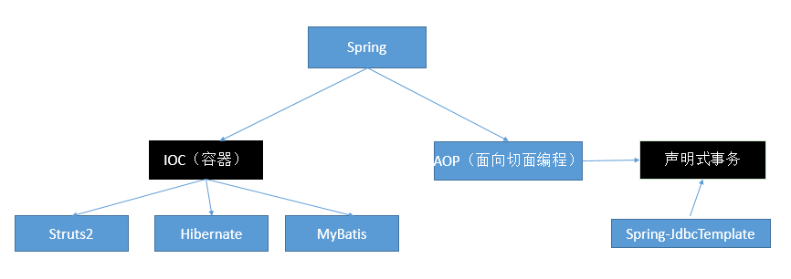

Spring（IOC+AOP）；

IOC：（Inversion（反转） Of Control）：控制反转；
控制：资源的获取方式；
主动式：（要什么资源都自己创建即可）
BookServlet{
BookService bs = new BookService();
AirPlane ap = new AirPlane();//复杂对象的创建是比较庞大的工程；
}
被动式：资源的获取不是我们自己创建，而是交给一个容器来创建和设置；
BookServlet{
BookService bs;
public void test01(){
bs.checkout();//
}
}
容器：管理所有的组件（有功能的类）；假设，BookServlet受容器管理，BookService也受容器管理；容器可以自动的探查出那些组件（类）需要用到另一写组件（类）；容器帮我们创建BookService对象，并把BookService对象赋值过去；
容器：主动的new资源变为被动的接受资源；
（容器）婚介所；
主动获取变为被动接受；
DI：（Dependency Injection）依赖注入；
容器能知道哪个组件（类）运行的时候，需要另外一个类（组件）；容器通过反射的形式，将容器中准备好的BookService对象注入（利用反射给属性赋值）到BookServlet中；
只要IOC容器管理的组件，都能使用容器提供的强大功能；
HelloWorld；（通过各种方式给容器中注册对象（注册会员））
以前是自己new 对象，现在所有的对象交给容器创建；给容器中注册组件
以后框架编写流程；

HelloWorld；
1）、导包
核心容器
spring-beans-4.0.0.RELEASE.jar
spring-context-4.0.0.RELEASE.jar
spring-core-4.0.0.RELEASE.jar
spring-expression-4.0.0.RELEASE.jar
commons-logging-1.1.3.jar
Spring运行的时候依赖一个日志包；没有就报错；
2）、写配置
spring的配置文件中，集合了spring的ioc容器管理的所有组件（会员清单）；
创建一个Spring Bean Configuration File（Spring的bean配置文件）；
<!-- 注册一个Person对象，Spring会自动创建这个Person对象 -->
<!--
一个Bean标签可以注册一个组件（对象、类）
class：写要注册的组件的全类名
id：这个对象的唯一标示；
-->
<bean id="person01" class="com.atguigu.bean.Person">
<!--使用property标签为Person对象的属性赋值
name="lastName"：指定属性名
value="张三"：为这个属性赋值
-->
<property name="lastName" value="张三"></property>
<property name="age" value="18"></property>
<property name="email" value="zhangsan@atguigu.com"></property>
<property name="gender" value="男"></property>
</bean>
3）、测试
package com.atguigu.test;
import static org.junit.Assert.*;
import org.junit.Test;
import org.springframework.context.ApplicationContext;
import org.springframework.context.support.ClassPathXmlApplicationContext;
import com.atguigu.bean.Person;
public class IOCTest {
/**
* 从容器中拿到这个组件
*/
@Test
public void test() {
//ApplicationContext：代表ioc容器
//ClassPathXmlApplicationContext:当前应用的xml配置文件在 ClassPath下
//根据spring的配置文件得到ioc容器对象
ApplicationContext ioc = new ClassPathXmlApplicationContext("ioc.xml");
//容器帮我们创建好对象了；
Person bean = (Person) ioc.getBean("person01");
System.out.println(bean);
}
}

new ClassPathXMlApplicationContext("ioc.xml")；ioc容器的配置文件在类路径下；
FileSystemXmlApplicationContext("F://ioc.xml")；ioc容器的配置文件在磁盘路径下；
package com.atguigu.test;
import org.junit.Test;
import org.springframework.context.ApplicationContext;
import org.springframework.context.support.ClassPathXmlApplicationContext;
import com.atguigu.bean.Person;
public class IOCTest {
/**
* 存在的几个问题；
* 1）、src，源码包开始的路径，称为类路径的开始；
* 所有源码包里面的东西都会被合并放在类路径里面；
* java：/bin/
* web：/WEB-INF/classes/
* 2）、导包commons-logging-1.1.3.jar（依赖）
* 3）、先导包再创建配置文件；
* 4）、Spring的容器接管了标志了s的类；
*/
/**
* 几个细节：
* 1）、ApplicationContext（IOC容器的接口）
* 2）、给容器中注册一个组件；我们也从容器中按照id拿到了这个组件的对象？
* 组件的创建工作，是容器完成；
* Person对象是什么时候创建好了呢？
* 容器中对象的创建在容器创建完成的时候就已经创建好了；
* 3）、同一个组件在ioc容器中是单实例的；容器启动完成都已经创建准备好的；
* 4）、容器中如果没有这个组件，获取组件？报异常
* org.springframework.beans.factory.NoSuchBeanDefinitionException:
* No bean named 'person03' is defined
* 5）、ioc容器在创建这个组件对象的时候，(property)会利用setter方法为javaBean的属性进行赋值；
* 6）、javaBean的属性名是由什么决定的？getter/setter方法是属性名;set去掉后面那一串首字母小写就是属性名;
* private String lastName;？
* 所有getter/setter都自动生成！
*/
/**
* 从容器中拿到这个组件
*/
@Test
public void test() {
//ApplicationContext：代表ioc容器
//ClassPathXmlApplicationContext:当前应用的xml配置文件在 ClassPath下
//根据spring的配置文件得到ioc容器对象
//ApplicationContext ioc = new ClassPathXmlApplicationContext("com/atguigu/bean/ioc.xml");
ApplicationContext ioc = new ClassPathXmlApplicationContext("ioc.xml");
//容器帮我们创建好对象了；
System.out.println("容器启动完成....");
Person bean = (Person) ioc.getBean("person01");
Object bean2 = ioc.getBean("person01");
System.out.println(bean == bean2);
System.out.println("==================");
Object bean3 = ioc.getBean("person03");
}
}